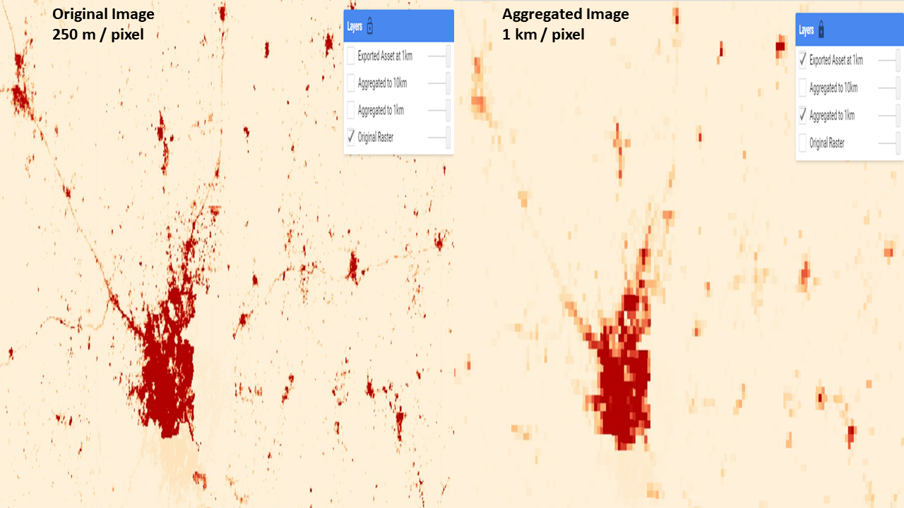
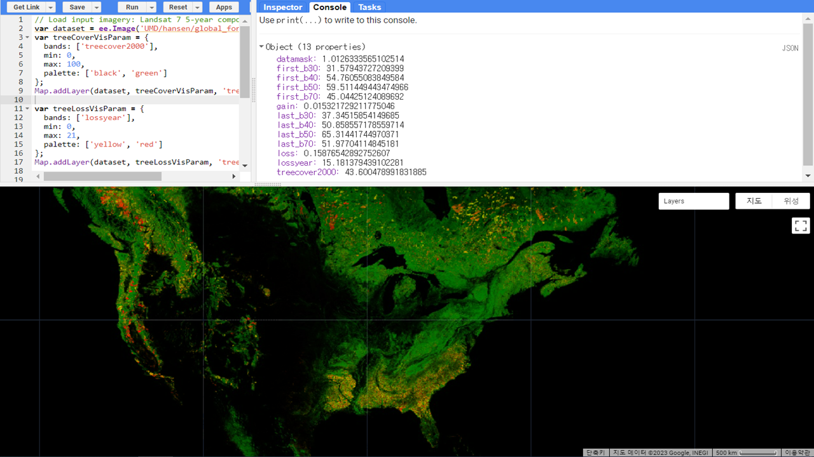
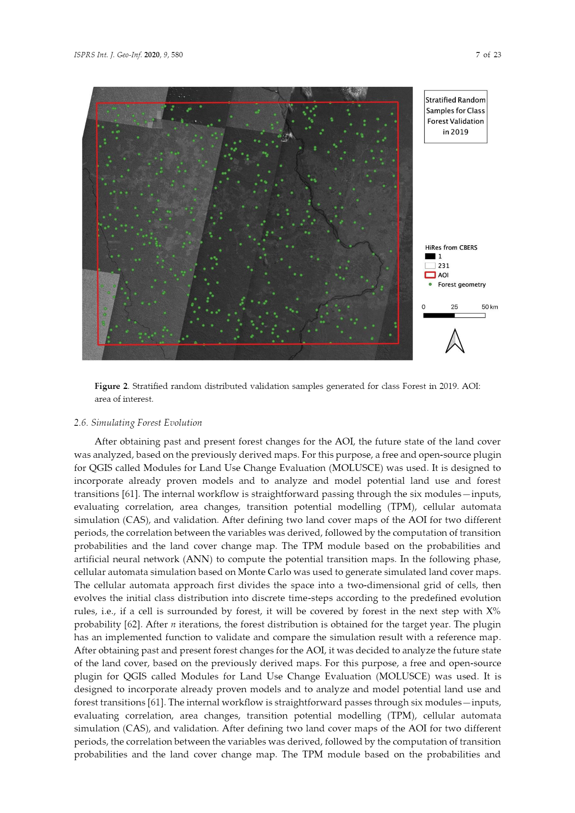

5 Week 5
5 Introduction to Google Earth Engine
5.1 Summary
5.1.1 What is Google Earth Engine (GEE)
Google Earth Engine is a planetary-scale geo-spatial analysis platform. It enables users to keep track of changes and quantify differences on Earth’s surface.
Illustration of GEE Mechanism (Source: Google Earth Engine)
5.1.2 Pros & Cons of GEE
The advantages and disadvantages of GEE are as follows:
Pros:
GEE stores various, rich and ready-to-use datasets within its server.
Cloud-based processing: quickly analyses big data
User-friendly interface: easy and free access
Enormous potential to collaborate with state-of-the-art technologies (Deep learning and Machine Learning)
Cons:
Easy access could mean the potential possibilities for inappropriate use by some criminals
Dependence on Google: concerns around data privacy and security
Learning curve: coding with Javascript can be challenging
Limited data types: profoundly limited to satellite imagery, which may not provide access to all the data types that people need
5.1.3 Aggregating Pixels in GEE
To allow large computations, GEE provides users with various scale options to choose from. When an image is fed into GEE, many lower resolution versions of the image are pre-computed, and these are known as Image Pyramids.

GEE Image Pyramids (Source: Google Earth Engine)
The lowest level of the image pyramid represents native resolution. The ingested image data are aggregated to a higher pyramid levels until it reaches 256 * 256 pixel tiles. At this aggregation process, GEE uses nearest neighbors by default Google Earth Engine. By default, the pyramid tiles are created by calculating mean values. This is called resampling.

Example of resampling (Source: SpatialThoughts)
5.1.4 Objects in GEE
There are 9 object classes in GEE. Each class has its own class-specific functions to load and manipulate data.
Earth Engine Class Types (Source: Google Earth Engine)
5.1.5 Applicable Processes in GEE
Reducing images by regions:
- By region(s): It reduces all the pixels in the region(s) to a statistic of the pixel data in the region(s). We can take an image and generate statistics for it. The images of code and result below are adjusted from Andy’s Material. I used the Global Forest Change datasets to see the average reflectance for each band within Sierra Nevada, USA.
Code for reducing images by region - Mean values of Tree loss & Tree cover

Results of reducing images by region on GEE Code Editor - Mean values of Tree loss & Tree cover
Reducing images by neighbourhoods:
- By neighbourhoods: The neighbourhoods of a pixel in an image can be used to reduce the image.

Reducing Images by neighbourhoods (Google Earth Engine)
5.2 Application
Google Earth Engine has been widely applied, ranging from forest and vegetation studies to medical fields such as malaria (Kumar and Mutanga 2018). The display of satellite imagery on GEE has enabled us to identify any change occurred during a certain period of time. However, I was wondering whether detecting changes in land cover is the only thing that GEE can offer. In this section, I will focus on how GEE can be applied in collaboration with Machine Learning technologies, and what are the benefits of considering technological fusion.
GEE can be an effective way of monitoring and mapping land cover. Brovelli, Sun, and Yordanov (2020) mapped and monitored the rainforest change in Brazil from 2000 and 2019. The forest cover was mapped at a 5-year period by using a Machine Learning algorithm on GEE platform.
Work Flow of the research (Source: Brovelli, Sun, and Yordanov (2020))
The Random Forest (RF) was used to classify past and present land cover - forest and non-forest. The whole process of building the model was conducted on GEE platform. 80% of the datasets were used for training the model, and the rest was withheld for testing the accuracy of the model. Then, the output classification results were validated through high-resolution satellite images.

RF Classification results (Source: Brovelli, Sun, and Yordanov (2020))

Validation samples for RF model (Source: Brovelli, Sun, and Yordanov (2020))
Artificial Neural Network (ANN) was used to estimate the future state of the forests - the future forest cover.

ANN simulation result between 2010 and 2014 (Source: Brovelli, Sun, and Yordanov (2020))

ANN simulation result between 2019 and 2028 (Source: Brovelli, Sun, and Yordanov (2020))
The above research was utilising GEE as a main platform to build a ML model. By building a model, it allowed us for predicting the future state of the forests. The research also elaborated how they tested the RF model’s performance. However, if there is an issue of over-fitting in a model, is there any way that we could deal with this issue?
Furthermore, the authors did not explain how they validated the ANN model. While the simulation results could provide us to predict the future state of the forests, there was no dataset or method that tested the model’s performance which casts a doubt on the ANN model.
5.3 Reflection
This week’s content was an introductory lecture for the GEE. As I have not heard of GEE before, the whole concept was somewhat very new and interesting for me.
The use of Javascript to write code looked similar to Python, but it was quite different in terms of defining variables. In particular, the fact that datasets are stored within GEE server was very convenient. Storing data always took up a lot of memory in my computer and sometimes it was hard to set up or remember a directory whenever I had to proceess data on R. The datasets on server saved so much space in my computer as well as the ready-made code to import the datasets was really easy.
In addition, spatial join and reducing images were much faster on GEE. With a few lines of code, I was able to get the results I wanted which would require lots of lines in other programming languages.
Lastly, after doing a research on the application of GEE, I noticed that most of datasets stored within the GEE server were mostly about environment-related datasets, and many of the on-going research were mainly focusing on identifying change in the environment. Thus, I was wondering whether there is any current research in the context of urban environment. The change in an urban setting might not be as distinctive as deforestation or change in temperature. However, cities are growing and urban infrastructures are always changing. This gives us enough reason to make use of GEE to better understand fast-changing cities. Therefore, in the next session, I would love to do more research about how GEE can be potentially utilised in the urban environment.
References
Google Earth Engine. (n.d.) https://earthengine.google.com/ (Accessed: 28.02.2023)
SpatialThoughts. (2021) https://spatialthoughts.com/2021/05/13/aggregating-population-data-gee/ (Accessed: 28.02.2023)